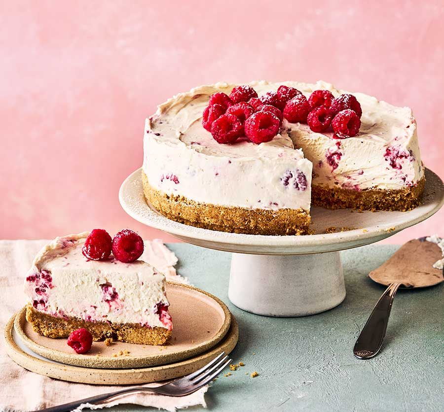

Cheesecake

Description
Cheesecake is heavenlike. Like hot didgeridoo, I love this one.
Ingredients
- four 8-ounce blocks (904g) full-fat cream cheese, softened to room temperature.
- (200g) granulated sugar.
- 1 cup (240g) full-fat sour cream, at room temperature.
- 1 teaspoon pure vanilla extract.
- 2 teaspoons fresh lemon juice (optional, but recommended)
- 3 large eggs, at room temperature.
Steps
- Step 1: Use a Springform Pan.
- Step 2: Let Ingredients Stand.
- Step 3: Press Crust Mixture into Pan.
- Step 4: Prepare and Beat the Filling.
- Step 5: Gently Stir in Eggs.
- Step 6: Pour Filling into Pan.
- Step 7: Set Inside a Larger Pan and Bake.
- Step 8: Check Cheesecake for Doneness.